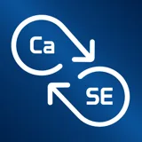
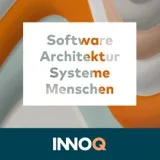
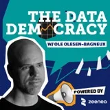

Podcasts & Interviews
Audio and video podcast appearances plus written interviews. Click any entry to expand. 🇩🇪 German, 🇺🇸 English · Audio Video Article
2026
A new conversation with Kris Peeters on The Data Playbook, picking up the threads of data contracts, data products, and AI-driven data governance. The episode is recorded and will be published soon.
Im Gespräch mit Ana Moya geht es um Data Contracts und Data Products als Grundlage moderner, dezentraler Datenarchitekturen — wie offene Standards wie ODCS und ODPS die Basis für verlässliche Schnittstellen schaffen und welche Rolle agentic AI bei der Automatisierung von Data Governance spielt. Aufgenommen im Rahmen des INFOMOTION Data Innovation Podcasts.
Im Gespräch mit Claudia Koschtial geht es darum, wie KI bei Data Governance helfen kann — nicht als Entscheider, sondern als Governance-Assistent. Anwendungsfälle reichen von der automatischen Klassifizierung bis hin zu Empfehlungen für Datenproduktbesitzer:innen.
Data Contracts als Fundament für Vertrauen im Data Mesh: Wie schaffen verbindliche Schnittstellen zwischen Datenproduzenten und -konsumenten die Grundlage für skalierbare, dezentrale Datenarchitekturen? Im Gespräch mit Claudia Koschtial geht es um Aufbau, Tooling und Praxiserfahrungen.
An interview exploring how data contracts function as explicit interfaces for data sharing in decentralized environments. Rather than treating data mesh as purely organizational or technical, the conversation frames it as an interface problem rooted in expectations that exist only in people's heads. Topics include why specifications require automation to be effective, the declarative nature of contract formats, and how contracts serve simultaneously as technical artifacts, collaboration mechanisms, and governance controls. The conversation closes by positioning data contracts as foundational infrastructure for AI agents to discover and safely consume enterprise data at scale.
2025
Im Gespräch mit Arnas Bräutigam geht es um die Gründungsgeschichte von Entropy Data: Wie aus einem Beratungscase bei einem großen Logistikunternehmen ein Produkt und schließlich ein Spin-off der INNOQ wurde — ohne klassische VC-Finanzierung, dafür mit validiertem Markt und ersten zahlenden Kunden. Es geht um Produktentwicklung im Beratungsalltag, den Schritt in die Selbstständigkeit und den Aufbau eines Data-Marktplatzes.
Recorded live at the POA Summit 2025 in Stuttgart, this episode features a discussion with Kris Peeters on the evolution from software engineering to data leadership. Topics include the Data Mesh Manager, data products, and data contracts as "the OpenAPI for data," why consulting and product divisions separated at Entropy Data, and how AI and MCPs are transforming data governance and self-service capabilities.

Audio🇺🇸CaSE #59 — Data Marketplace, Data Products and Data ContractsA conversation about the journey toward data contracts and marketplaces. The discussion covers what constitutes a data contract, how contracts function within data marketplaces, and their relationship to data products. The team examines governance through a domain-driven design lens — versioning, lifecycle management, contract validation — and connects it to broader industry standards and intelligent discovery mechanisms.
 Article🇺🇸From Consultant to Founder: We are founding Entropy Data
Article🇺🇸From Consultant to Founder: We are founding Entropy DataThe story behind founding Entropy Data as an INNOQ spin-off. The Data Mesh Manager was primarily developed by Simon Harrer and Jochen Christ within INNOQ's Employee Innovation Program since 2022 and has now evolved into an independent company with customers across logistics, pharmaceuticals, insurance, and energy sectors. The article covers market validation, why "the need is real, demand is high", and how Entropy Data will focus on product development while maintaining collaboration with INNOQ on consulting and integration services.
2024
Im Gespräch mit Artur König geht es um Datenprodukte und Data Contracts: Wie sich klare Schnittstellen zwischen Datenproduzenten und -konsumenten in der Praxis etablieren lassen, welche Rolle der Open Data Contract Standard spielt und wie Tools wie die Data Contract CLI dabei helfen, Data Contracts im Alltag umzusetzen.

Audio🇩🇪INNOQ Podcast #160 — Data ContractsAPI-Spezifikationen, aber für Datensätze. Von Data Contracts werden wir ganz viel hören. Sie werden die Datenwelt im Sturm erobern, weil sie gebraucht werden. Im Gespräch mit Sven Johann spreche ich über Schema-Spezifikationen, Data Ownership, Nutzungsbedingungen, Quality- und Service Level — und wie Data Contracts klare Vereinbarungen zwischen Datenproduzenten und -konsumenten etablieren, ähnlich wie API-Spezifikationen in der klassischen Softwareentwicklung.

Audio🇺🇸The Data Democracy #28 — Crafting Code Clarity and Championing Data Mesh in GermanyThe transition from teaching Java programming to becoming a Data Mesh advocate in Germany. The episode explores how software engineering principles apply to data architecture, with particular emphasis on data contracts and the process of fostering a data-centric culture within software-focused organizations. Includes the story of translating Zhamak Dehghani's Data Mesh book into German and insights into early Data Mesh adoption in the German tech landscape.
2022
Eberhard Wolff diskutiert Data Mesh als domänenübergreifendes Datenanalyse-Konzept mit Jochen Christ, Simon Harrer und Theo Pack. Es geht um Implementierungsansätze und wie dezentrale, selbstorganisierte Teams trotzdem eine zentralisierte Sicht auf alle Daten erreichen können.
Mit Jochen Christ · Episode-Seite
2021
Live-Stream-Session mit Jochen Christ, Franziska Dessart, Simon Harrer und Martin Huber, in der Remote Mob Programming live demonstriert wird — basierend auf über zwei Jahren ausschließlicher Praxis dieser Arbeitsweise.
Mit Jochen Christ & Martin Huber · Episode-Seite
2020
Ben Linders interviews Simon Harrer, Jochen Christ, and Martin Huber about their experience practicing mob programming while working remotely for over a year. The Q&A covers daily workflow, role rotation strategies (10-minute cycles for a three-person team), use of Architecture Decision Records for documentation, and essential equipment like professional microphones and external cameras. The authors emphasize that remote mob programming requires employer trust, solves workplace isolation, and delivers superior code quality. They recommend starting with medium-sized features and upgrading equipment gradually as the practice becomes routine.
A 30-minute episode on Remote Mob Programming — how the concept emerged, how the team adopted it, and how it positively impacts the speed and quality of distributed software development.
2019
Marc Löffler interviewt Simon, wie Remote Mob Programming in der Praxis funktioniert — das gesamte Team auf einem Bildschirm via Zoom, gemeinsames Lernen, Wissensverteilung und wie man am besten startet (Empfehlung: Mark Pearls „Code with the Wisdom of the Crowd").
Eine Kapitel-für-Kapitel-Buchclub-Diskussion zu „Java by Comparison" mit dem Autor Simon Harrer — Code-Style, Exception Handling und Naming Conventions, mit den ein oder anderen Meinungsverschiedenheiten zwischen den Hosts. Aufgenommen in Holgers neuem Studio bei Bamberger Bier.
Stefan Tilkov interviewt drei INNOQ-Berater — Jochen Christ, Simon Harrer und Martin Huber — über ihre Erfahrungen mit Remote Mob Programming auf einem E-Commerce-Projekt. Das Team arbeitet synchron am gemeinsamen Code mit Screensharing und Videokonferenz, bei rotierender „Typist"-Rolle alle zehn Minuten. Wir sprechen über Produktivitätsgewinne, professionelle Audio-Ausstattung und wie dieser Ansatz bessere Work-Life-Balance bei hoher Codequalität ermöglicht.
Mit Jochen Christ & Martin Huber · Episode-Seite
A conversation with Adam Bien about Simon's programming journey — from his first VB code at Siemens to learning Scheme, his PhD on choreography and distributed transactions, and his work at INNOQ. Core thesis: code should be optimized for humans, not machines, avoiding over-abstraction and unnecessary reuse in favor of pragmatic, human-centered code.
The journey from university teaching to industry practice. The conversation explores experience building Java courses with hands-on learning and code reviews, plus insights on remote mob programming — where multiple developers work on shared code with one typist rotating every 10 minutes. Successful mob programming requires "strong opinions loosely held". The episode also covers Java by Comparison and its before/after teaching method.
2018
Teaching, writing "Java by Comparison", family priorities, and solving real problems. Covers the journey through burnout, the Pareto principle, pair and mob programming, and balancing professional ambition with personal well-being.
Im Gespräch mit Michael Vitz stelle ich mein Buch „Java by Comparison" zu Clean Code in Java vor. Es geht in dieser Folge unter anderem um das Konzept des Buches und die Frage, wie man Anfängern beibringt sauberen Code zu schreiben. Dabei werden drei konkrete Möglichkeiten, Code aufzuräumen und zu verbessern, diskutiert.